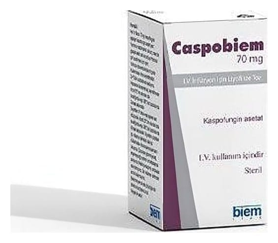

Caspobiem 70 mg I.V. İnfüzyon İçin Liyofilize Toz, 1 Flakon

Ne için kullanılır
KT · Bölüm 1CASPOBİEM kaspofungin adı verilen bir ilaç içerir. Bu ilaç antifungaller olarak adlandırılan bir gruba mensuptur.
CASPOBİEM çocuklarda, ergenlerde ve yetişkinlerde aşağıdaki enfeksiyonların tedavisinde kullanılır: • dokularınızda veya organlarınızda bulunan ciddi fungal enfeksiyonlar (“invazif kandidiyazis” adı verilir. İnvazif kandidiyazis kan, kalp, beyin, gözler, kemikler ve vücudun diğer kısımlarını etkileyebilen ciddi bir enfeksiyondur. Bu enfeksiyon Candida adı verilen mantar (maya) hücrelerinden kaynaklanır. Bu enfeksiyona yakalanan kişiler çok kısa zaman önce bir operasyon geçirmiş veya bağışıklığı zayıflamış kişileri içerir. • Bir antibiyotiğe cevap vermeyen ateş ve üşüme bu tip enfeksiyonun en yaygın belirtileridir. • Burnunuz, nazal sinüsleriniz veya akciğerlerinizde bulunan fungal enfeksiyonlar (“invazif aspergilloz” adı verilir). Diğer antifungal tedaviler bu enfeksiyona karşı etkili olmadığında veya yan etkilere yol açtığında CASPOBİEM kullanılabilir. Bu enfeksiyon Aspergillus adı verilen bir küften kaynaklanır. Bu enfeksiyona yakalanan kişiler kemoterapi almakta olan, bir nakil yapılan ve bağışıklığı zayıflamış kişileri içerir.
• Bir antibiyotik ile tedaviye cevap vermeyen ateşiniz varsa ve beyaz kan hücre sayınız düşük ise, CASPOBİEM kuşkulanılan fungal enfeksiyonlarda kullanılabilir. Bir fungal enfeksiyona yakalanma riski taşıyan kişiler çok kısa zaman önce bir operasyon geçirmiş veya bağışıklığı zayıflamış kişileri içerir. CASPOBİEM mantar hücrelerini dayanıksız hale getirir ve mantarın düzgün şekilde büyümesini durdurur. Böylelikle enfeksiyonun yayılmasını durdurur ve vücudun doğal savunma mekanizmalarına enfeksiyonu tamamen temizleme şansı verir.
CASPOBİEM 70 mg, tip 1 cam flakonda, kauçuk tıpalı ve alüminyum flip-off kapaklı ambalajda beyaz- beyazımsı renkte liyofilize tozdur.